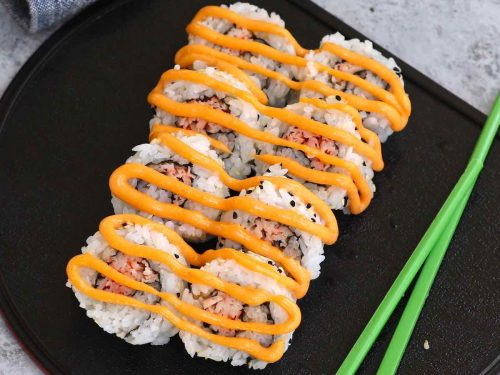

The spicy crab roll is an inside out stye sushi, with the nori seaweed being wrapped with rice while the inside is just crab filling.
The crab roll is glazed with a delicious spicy mayo sauce, giving it a creamy and spicy taste!
- Kani Stick
- Sushi Rice
- Nori Seaweed
- Sushi Vinegar
- Sesame Seeds
- Mayo
- Sriracha
- Cook the sushi rice using a 1:1 water to rice ratio. Once cooked, transfer to a large bowl and let it cool down slightly. When it's still warm, stir in sushi vinegar and mix well.
- Shred the imitation crab, and add it to a mixing bowl. Season with sriracha sauce and mayo. Mix well.
- Cut the nori sheet into two halves. PLace half of a nori sheet on top of the bamboo mat shiny side facing down.
- Spread around 3/4 cup sushi rice over nori evenly.
- Sprinkle sesame seeds on top of the rice.
- Flip the sheet and add the spicy kani crab salad to the middle of the nori sheet.
- Place the thumbers underneath the bamboo mat and lift the edge up and over the filling. Roll the bamboo mat away from you and press the rice and filling together. Keep rolling until the ends meet.
- Cut each roll into 8 pieces. Drizzle more spicy mayo sauce on top of the roll for some extra heat.
- Before handling sushi. Dip hands in a mixture of 1/4 water and 2 tsps of rice vinegar. This mixture is named Tezu water and helps rice not stick to your hands.
- When rolling the sushi, you'll need to squeeze the roll gently but firmly. Once you finish, you can place the mat over the roll and gently squeeze it again. This will prevent the sushi roll from falling apart.
- If you're using canned crab meat, make sure to squeee out the water thoroughly.